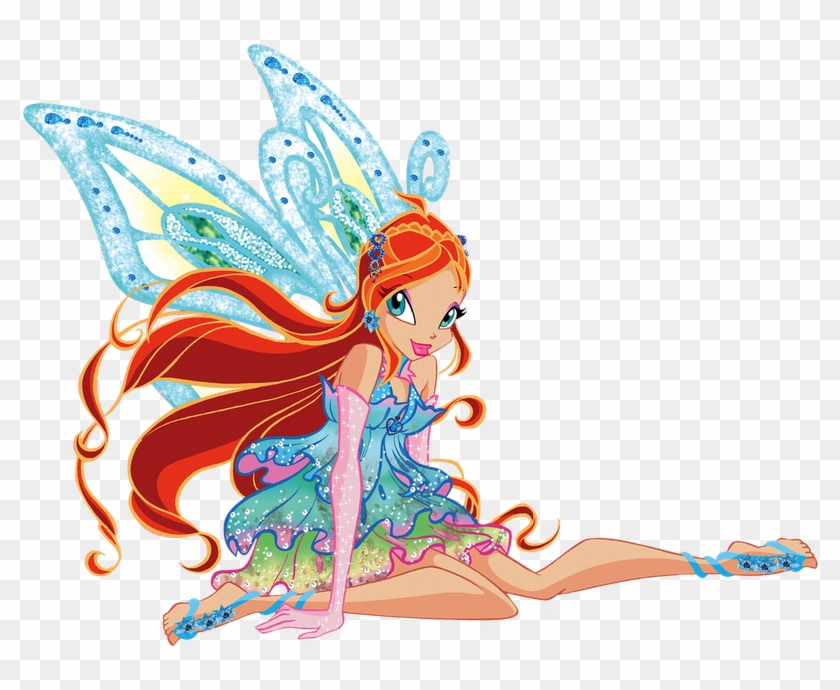

This is Bloom from The Winx Club! Her backstory is rather interesting. She was born a princess, but got sent to Earth because her planet was getting attacked. She got adopted and didn't realize she's a fairy until she was 16. From then, she studied in a magic college and realized that she's the most powerful fairy. Bloom is the fairy of the dragon flame.
Image file type: PNG
I chose this image because she's my favorite fairy from the show (fun fact: I dressed as her for Halloween when I was 10). My favorite color is also blue, and this is one of her bluest outfits yet!